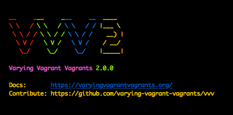

Soooo...I did it again. I went months without posting anything. Why you ask? Because I am a mess of projects...and emotions. I started writing this super long post about this Python project I created to email myself a daily workout from a plan I created but then I hurt myself and had to scale back my training. My depression made me abandon this post. I started jacking with a Raspberry Pi...it had a broken usb port...so I set it aside.
My life has been a flurry of abandoned work and unrealized dreams.
Worst of all, my wife finally decided to relocate her website. I rushed to get ready to create a new one for her...I took too long so she paid somebody (sadness), but in making the attempt I did some research into setting up a development environment for WordPress on my local machine. Below I've documented my steps for my many readers...and mostly so that I can remember how to do it myself.
What is it?
This isn't my first rodeo. I have a nasty and abused laptop that I utilize for developing and running scripts. During my first trip into WordPress development I threw a LAMP stack on it and went for it. This was a total pain! I had to SSH into it or VNC and I knew that it would be configured differently from whatever host platform I decided to go with. It got all full of crap, I couldn't roll anything back, and eventually I just shut it off and forgot about it.
This last go around I discovered the many V's of WordPress development. VV and VVV allow me to create virtual-environments on my laptop so I can mirror the configuration of my host pretty closely and I can do everything without any extra hops to another physical machine.

I can run as many sites as I want, delete, edit, or publish them from anywhere and its all pretty easy.
Prerequisites
First, you are going to need the most current version of VirtualBox. There are other virtual machine clients but VirtualBox is free. I'm sure VMWare or some other viewer will work but if you venture down this road you can pack up your money bags and go alone! It is super easy to install VirtualBox and there is a ton of support available if you jack something up.
Second, you are going to need Vagrant. Vagrant is a tool, for use with your Virtual Machine client, that builds and allows you to manage virtual machine environments. So if you are a developer you can create an isolated and reproducible environment that will mirror the environment you intend your users to utilize. This is like a building block toward our journey of creating an environment for our WordPress works. It is really easy to install. Go to the webpage and download the version that matches your system. I have only utilized it in the command-line. I don't even think there is a GUI interface...so load it up and you are good to go.
Once you have Vagrant installed there are a couple of plug-ins you can install that are supposed to make creating new sites easier. Personally, I never got either of them to work. Try this out:
vagrant plugin install vagrant-hostsupdater
vagrant plugin install vagrant-triggers
These plugins are supposed to automatically update your host file and allow you to add new sites with ease. Like I said, they didn't work for me but updating the host file yourself is as easy as updating a host file...I'll cover it...
Picking up the Vagrants
So VVV, or Varying Variable Vagrants, is the piece of software that brings this all together. VVV is an open-source vagrant configuration. This particular configuration has been designed specifically for use with WordPress.
I have yet to attempt a deployment from a site I have worked on using VVV, but prototyping, learning, and building out a few sites has really been great using VVV.
Installation is fairly straight forward. All you really need to do is clone VVV straight from GitHub to wherever you will be doing your development. For instance, I have the following folder layout:
In order to get VVV into the desired location navigate to it from the command-line and execute your clone:
git clone https://github.com/Varying-Vagrant-Vagrants/VVV.git
You can also download the zip, but that is way less l33t.
Once VVV is in place, and extracted if necessary, all you have to do to run it for the first time is run the following command from with the VVV folder:
vagrant up
The first time you run it you might as well turn on some Netflix. I think it took my system about 45 minutes to setup the VM and download some updates. Once its all finished, navigate to one of the canned URLs like vvvtest and you should see a test page.
To stop the VM, run the command:
vagrant halt
Creating a Page of your Own
At this point you are all setup. Personally, I ran into a little trouble right about now. Creating a new site is simple, but if the plug-ins don't all jive you have to jump through some hoops to edit your site.
The easiest way to create a new page is to use another script called VV...we are using a ton of V's here (VV for VVV).
You can check out the git repo for VV, but I have Homebrew installed on my computer so downloading it is just one line in the terminal:
brew install bradp/vv/vv
After thats all done all you have to do is create the site, enter this command in your VVV directory:
vv create
You will get hit with a few questions regarding the name of your site and the url you would like to access it from locally, usually something.dev, make sure you remember this url since it is what you will use to access your site.
After that command is done running you should be given a command prompt. At this point you need to run the command:
vagrant up --provision
This will ensure your new sites are accessible and ready for work.
Did it work?
Let me start by apologizing...I'm about to save you hours of development frustration...the right of passage that we all love. If you are like me, you will see that your VM is running and try to navigate to your newly created site. Maybe your plug-ins will all be chugging along and you'll land on this site and start WordPressing it up. I however, did not have this experience. My VM was running but I could not navigate to any newly created sites. The issue here, I found after several hours, was my host file but there is a really easy fix.
You are going to have to find the file "vvv-config.yml" in your VVV folder.
This file contains a bunch of configurations for your VVV environment, and if your junk is not working, it most likely does not contain an entry for your newly created site. If thats the case, you will have to create a really simple entry, that will in turn ensure your host file is edited to reflect the new site. It should look like the example below (where bpwb.dev is the new site I tried to create):

After you have made these changes run another:
vagrant up --provision
After your VM is done spinning up you should be able to access your new site.
Who knows what's next?
I have a ton of little projects that I am trying to sort out. I have a lot of good ideas and its really daunting. So much...
I talked about my Python workout script...that was pretty depressing...I plan on writing about it but I think I'll do it as a short blurb and a share of some code from GitHub.
Anyway, my priorities right now are building a Wordpress site for a side project I am doing with my wife, re-doing my static site, creating a wireless hotspot for my VPN at home, and rebuilding a stainless steel road bike I picked up for a few bucks. Very unfocused stuff.
I have some free time over the next few weeks so hopefully I will be able to rapid fire out a few posts. I'll probably even throw something up about the bike to save it for posterity since nobody reads this thing anyways. Don't hold your breath.